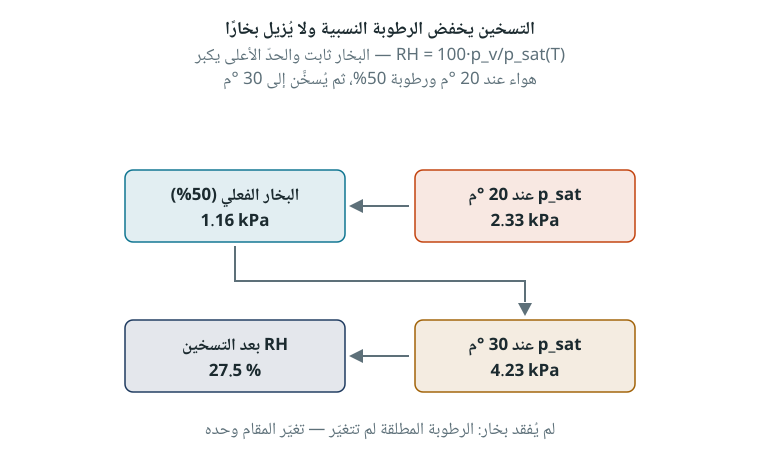

الرطوبة النسبية
Relative humidity
الرطوبة النسبية RH هي نسبة الضغط الجزئي لبخار الماء في الهواء إلى ضغط البخار المشبع عند الحرارة نفسها، مضروبة في 100: RH = 100·p_v/p_sat(T). وهي نسبة مئوية لا تعبّر عن كمية الماء المطلقة، بل عن قرب الهواء من التشبّع. ولهذا تنخفض عند تسخين الهواء بلا إضافة بخار.
الرطوبة النسبية مقياس نسبي: تقول كم بقي من «سعة» الهواء لحمل البخار عند حرارته الحالية. فالهواء عند 20 °C ورطوبة 50% يحمل نصف ما يستطيع حمله عند تلك الحرارة. وإذا سُخّن هذا الهواء إلى 30 °C بلا إضافة بخار بقيت كمية الماء كما هي لكن السعة زادت، فتنخفض الرطوبة النسبية إلى نحو 28%. ولهذا يجفّف التدفئة الهواء في الغرف شتاءً. مثال: هواء عند 20 °C وRH = 50%: p_v = 0.5×2.339 = 1.170 kPa، وعند تسخينه إلى 30 °C حيث p_sat = 4.246 kPa تصبح RH = 100×1.170/4.246 = 27.6%.
كيف تعمل الظاهرة؟
سعة الهواء لحمل بخار الماء محدودة بضغط البخار المشبع عند حرارته. وعندما يقل الضغط الجزئي الفعلي عن المشبع يكون الهواء غير مشبع، فيتبخر الماء من الأسطح الرطبة إليه. وعندما يتساوى الضغطان يبدأ التكثّف. والرطوبة النسبية تقيس هذه المسافة إلى التشبّع. وبما أن المشبع يزيد أسّياً مع الحرارة، فإن تسخين الهواء يوسّع سعته فيخفض الرطوبة النسبية بلا أي تغيير في كمية الماء، وتبريد الهواء يضيّقها فيرفعها حتى التكثّف.
العلاقة بالأرقام
RH = 100·p_v/p_sat(T). ونقطة الندى هي الحرارة التي عندها p_sat(T_dp) = p_v. مثال: p_v = 1.170 kPa يعطي T_dp ≈ 9.3 °C. والفرق T − T_dp = 20 − 9.3 = 10.7 K يسمّى انتشار نقطة الندى، وهو مقياس جفاف الهواء. وفي التبريد التبخيري ينخفض الهواء نحو حرارة المصباح الرطب، وهي أقل من الجافة بمقدار يعتمد على RH: عند RH = 50% يكون الفرق نحو 9 K.
مفاهيم متقاربة
يُفرَّق بين RH والرطوبة المطلقة: الأولى نسبة مئوية والثانية kg/m³. ويُفرَّق بين RH ونسبة الخلط ω: الأولى تعتمد على الحرارة والثانية لا. ويُفرَّق بين RH والرطوبة النوعية: الثانية كتلة البخار إلى كتلة الخليط. وأخيراً يُفرَّق بين RH ونقطة الندى: الأولى نسبة عند حرارة معيّنة، والثانية حرارة مطلقة تُشتق من الضغط الجزئي وحده ولا تتغيّر بالتسخين.
حدود التطبيق
RH لا تعطي كمية الماء المطلقة، فلا تكفي وحدها لحساب حمل التبريد أو معدل التبخر. ولا تصف الراحة الحرارية وحدها، لأن الإحساس يعتمد أيضاً على الحرارة والحركة والإشعاع. ولا تصف الهواء فوق 100% حيث يتشكّل الضباب. ولا تصف البخار في حيّز بلا هواء. وأخيراً لا تصف رطوبة المواد الصلبة، حيث يُستعمل نشاط الماء لا RH الهواء.

| الكمية | القيمة | المصدر |
|---|---|---|
| ضغط البخار المشبع عند 20 °C | 2.339 kPa | [1] |
| الضغط الجزئي عند RH = 50% | 1.170 kPa | [1] |
| الرطوبة النسبية بعد التسخين إلى 30 °C | 27.6 % | [1] |
المصادر
- 1 Water Vapor Saturation Pressure: Data, Tables & Calculator — The Engineering ToolBox (2026). www.engineeringtoolbox.com/water-vapor-saturation-pressure-d_599.html · اطُّلع عليه 2026-11-22
- 2 CODATA Value: Boltzmann constant — NIST — CODATA 2022 recommended values (2024). physics.nist.gov/cgi-bin/cuu/Value?k · اطُّلع عليه 2026-11-22
استشهد بهذا المصطلح
الصيغتان مبنيتان من بيانات الصفحة نفسها: العنوان والتاريخ ورابط النسخة المنشورة.
الرطوبة النسبية — Relative humidity. (2026). ديوان المعرفة — انفراد. https://infiradev.com/diwan/terms/term-relative-humidity.html
@misc{term-relative-humidity2026,
title = {الرطوبة النسبية},
titleaddon = {Relative humidity},
howpublished = {{ديوان المعرفة — انفراد} — مرجع علمي عربي},
year = {2026},
url = {https://infiradev.com/diwan/terms/term-relative-humidity.html},
urldate = {2026-11-22},
note = {مراجعة علمية: تحرير انفراد الآلي — نُشر بأمر عبدالله الهويدي}
}
راجعه: تحرير انفراد الآلي — نُشر بأمر عبدالله الهويدي · 2026-11-22 · آخر تحديث 2026-11-22